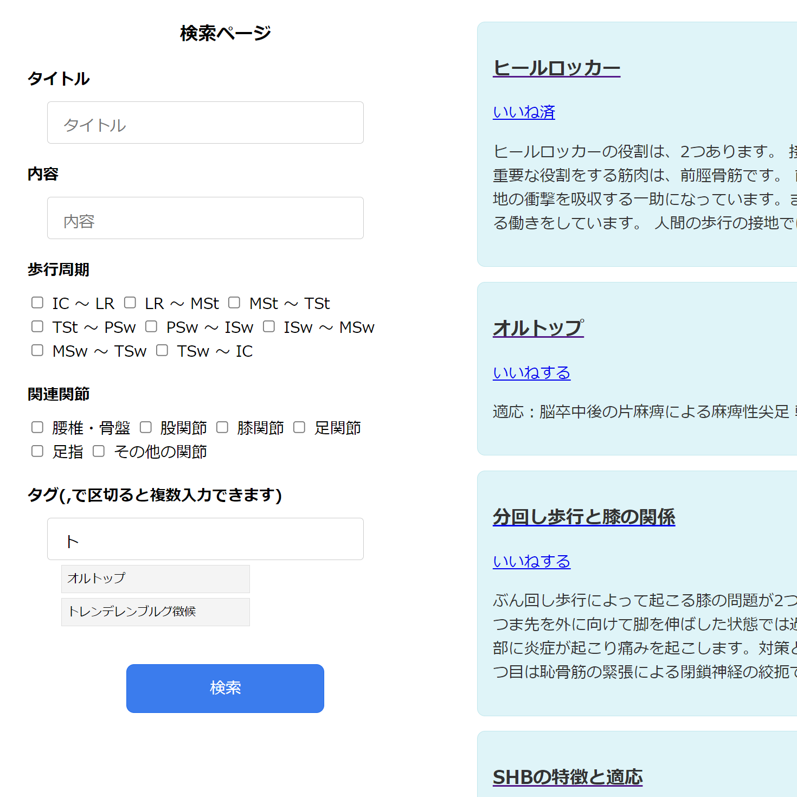
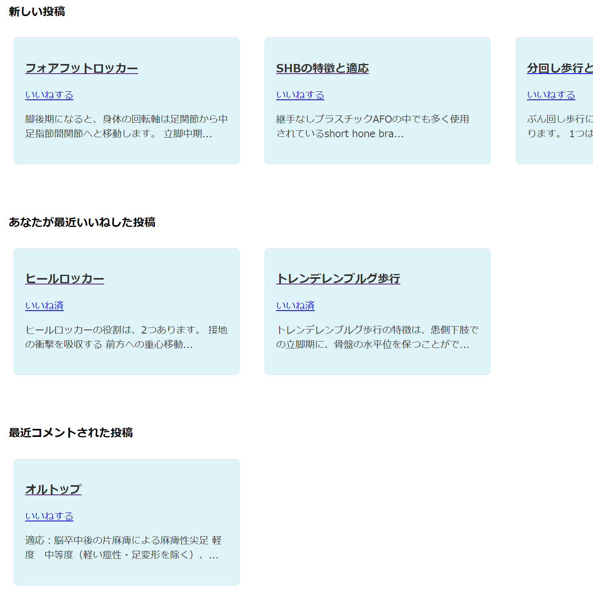

GaitPost
(歩行のリハビリの知識を投稿、検索できるアプリ)
開発環境
Ruby / Ruby on Rails / MySQL / GitHub / Render/ Visual Studio Code
-
概要
制作時間 50時間 URL https://gaitpost-app.onrender.com/a> ID admin PASS pass39324 -
動作テスト
テスト用アカウント
mail taro@test PASS test39324
OUTLINEアプリケーションの概要
オリジナルアプリケーションとして、歩行に関するリハビリの知識（キーワード、分析のポイント、治療方法など）を投稿、閲覧できるコミュニケーションアプリを開発しました。以下が主な機能です。
投稿検索機能
ヘッダーの「投稿検索」ボタンから検索画面に遷移し、キーワード、タグ、歩行周期、関節の条件を絞り検索できます。表示されている投稿を選択すると投稿の詳細を確認できます。
新規投稿機能
ヘッダーのボタンから新規投稿が行えます。タイトル、内容、文献、歩行周期、関節、タグを指定して投稿できます。 タグは「,」で区切ることで複数登録できます。
ユーザー管理機能
ログインすることで自身の投稿の編集、削除が行えます。
-
開発に至った経緯
私自身が理学療法士として勤務する中で歩行分析の難しさを感じており、新人や学生も歩行分析が上手くできずに苦労しているという話をよく聞いていました。
特にトップダウン評価（目の前の患者さんの動きを分析し、そこから問題点を洗い出す）が難しいと感じたり聞いたりしたため、それらの問題を解決するために多くのユーザーの知識を主に歩行の相と対象の関節でフィルタリングして投稿、閲覧できるアプリを作成することにしました。
-
開発で工夫したこと
1つ目が検索機能です。歩行周期や関節の項目を複数指定できるほか、複数のタグを指定し投稿、検索することを可能にしたことにより、適切な情報を届けたい、検索したいユーザーの助けになるようにしました。また、タグの登録時は既存のタグが入力時に表示されるようにしたことにより、検索の精度を高めています。
2つ目がトップページとユーザー詳細ページにおける投稿のカテゴリー分け表示です。自身がいいねした投稿や最近コメントが合った投稿がまとめて表示されることにより、いいね機能を投稿を確認する際のブックマークの様な用途で利用したり、自身のコメントに対する返答が来ているか確認しやすくなるようにしています。
-
今後実装したいと思っていること
投稿の閲覧履歴が保存、表示されるような仕組みを作りたいと考えています。これにより自身が最近投稿した閲覧の再確認や、未確認の投稿の判別をすぐに行えるようにし、利便性を高めたいと考えています。
ほかには投稿のいいね数が表示されるようにして、投稿者のモチベーションに繋げたいと考えています。他には、JavaScriptの理解を深め、フロントエンド部分の使いやすさやデザイン性の改善を図り、より洗練されたサービスにしたいと考えています。